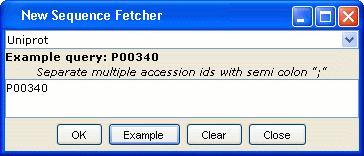

Sequence Fetcher
Jalview can retrieve sequences from certain databases using either the WSDBFetch service provided by the European Bioinformatics Institute, and DAS servers capable of the sequence command (since version 2.4).
The Sequence Fetcher dialog box can be opened via the "File" menu on the main desktop in order to retrieve sequences as a new alignment, or opened via the "File" menu of an existing alignment to import additional sequences. Please note, there will be a short delay when the sequence fetcher is first opened, whilst Jalview compiles the list of available sequence datasources from the currently defined DAS server registry.
First, select the database you want to retrieve sequences from. Then, enter one or more accession ids (as a semi-colon separated list), or press the "Example" button to paste the example accession for the currently selected database into the retrieval box. Finally, press "OK" to initiate the retrieval.
If you are retrieving sequences from the PDB, you can retrieve
specific chains by appending a colon and the chain id to the PDB
id. For example :
1GAQ:A
If you use the WSDBFetch sequence fetcher services (EMBL, Uniprot, PDB and PFAM) in work for publication, please cite:
Pillai S., Silventoinen V., Kallio K., Senger M., Sobhany S., Tate J., Velankar
S., Golovin A., Henrick K., Rice P., Stoehr P., Lopez R.
SOAP-based services provided by the European Bioinformatics Institute.
Nucleic Acids Res. 33(1):W25-W28 (2005)